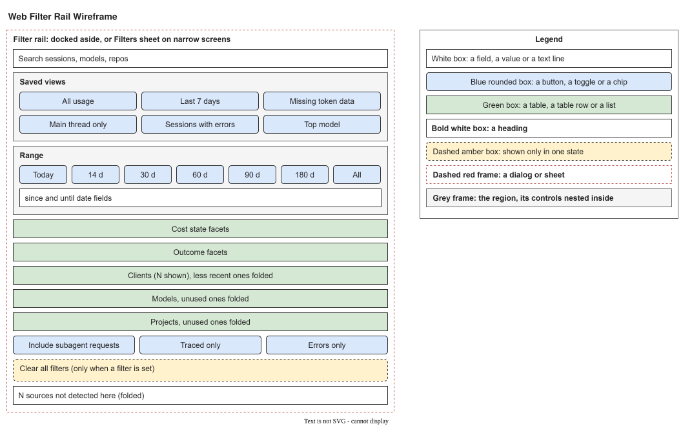

active approved inferred covers web/src/*, web/src/design-system/*
Web Filter Rail Wireframe
This wireframe shows the panel a reader uses to narrow what the dashboard counts. It lists every control in the order the reader meets it, from search to the switches. The same panel opens as a sheet on a small screen.
What the diagram shows
- The rail starts with search, saved views and the date range
web/src/FilterRail.tsx:298-332. - The saved views are fixed patches plus a top model view when one exists
web/src/FilterRail.tsx:145-173. - The range presets run from today to all days
web/src/FilterRail.tsx:56-56. - Facet groups for cost state, outcome, clients, models and projects follow, with less recent entries folded away
web/src/FilterRail.tsx:335-335web/src/FilterRail.tsx:407-407. - Three switches, the reset button and the list of undetected sources close the rail
web/src/FilterRail.tsx:432-450web/src/FilterRail.tsx:454-454. - The same content renders in a sheet from the left with its own title
web/src/FilterRail.tsx:486-503.
Capability and related functionality
The rail is part of App Screen. The query it edits is drawn in Web Concept Map, and the saved views and switches map to the report filters described in Web Workflows.
Web Filter Rail Wireframe

Code references
| Code | What it shows |
|---|---|
web/src/FilterRail.tsx:298-332 |
The rail starts with search, saved views and the date range |
web/src/FilterRail.tsx:145-173 |
The saved views are fixed patches plus a top model view when one exists |
web/src/FilterRail.tsx:56-56 |
The range presets run from today to all days |
web/src/FilterRail.tsx:335-335 |
Facet groups for cost state, outcome, clients, models and projects follow, with less recent entries folded away |
web/src/FilterRail.tsx:407-407 |
Facet groups for cost state, outcome, clients, models and projects follow, with less recent entries folded away |
web/src/FilterRail.tsx:432-450 |
Three switches, the reset button and the list of undetected sources close the rail |
web/src/FilterRail.tsx:454-454 |
Three switches, the reset button and the list of undetected sources close the rail |
web/src/FilterRail.tsx:486-503 |
The same content renders in a sheet from the left with its own title |